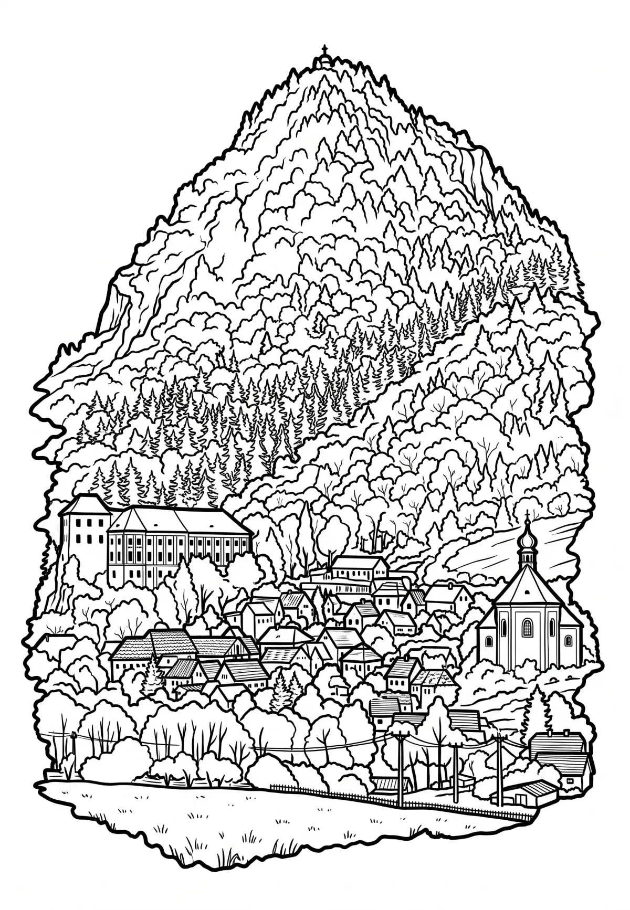

Milešovka
Milešovka (německy Milleschauer, Donnersberg neboli Hromová hora) je nejvyšší hora Českého středohoří na území stejnojmenné chráněné krajinné oblasti. Její vrchol leží ve výšce 836,7 metrů nad mořem.Jméno získala podle nedalekého Milešova, části obce Velemín v okrese Litoměřice, na jehož katastrálním území leží. V roce 1951 zde byla vyhlášena národní přírodní rezervace (51,3 ha).
Více na Wikipedii